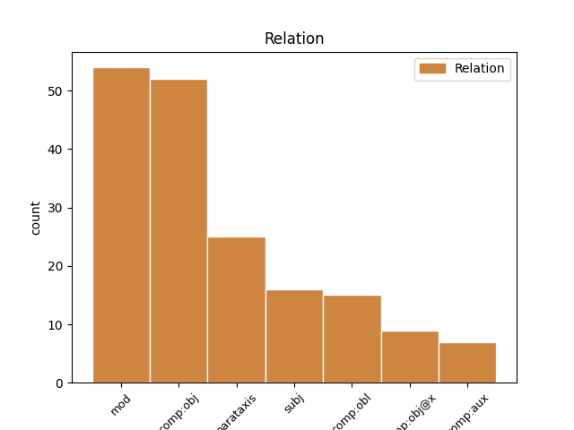
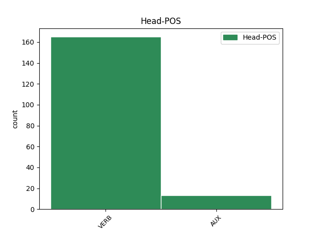
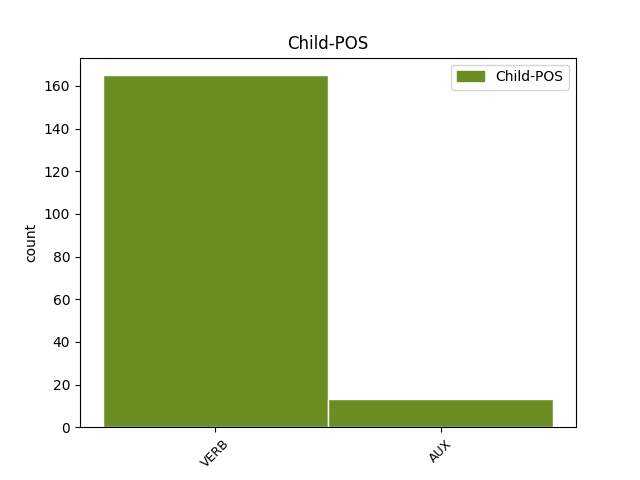

Distribution of features within this leaf



Agreement Rules sorted by frequency.
- When the dependent token is the modifer(mod) of the head token, and the dependent token is VERB.
1 A _ _ _ _ 0 _ _ _
2 szerbek _ _ _ _ 0 _ _ _
3 közül _ _ _ _ 0 _ _ _
4 jelenleg _ _ _ _ 0 _ _ _
5 csak _ _ _ _ 0 _ _ _
6 az _ _ _ _ 0 _ _ _
7 ellenzékiek _ _ _ _ 0 _ _ _
8 támogatják támogat VERB _ Definite=Def|Mood=Ind|Number=Plur|Person=3|Tense=Pres|VerbForm=Fin|Voice=Act 0 _ _ _
9 azt _ _ _ _ 0 _ _ _
10 a _ _ _ _ 0 _ _ _
11 néhány _ _ _ _ 0 _ _ _
12 évvel _ _ _ _ 0 _ _ _
13 ezelőtt _ _ _ _ 0 _ _ _
14 előterjesztett _ _ _ _ 0 _ _ _
15 tervet _ _ _ _ 0 _ _ _
16 , _ _ _ _ 0 _ _ _
17 mely _ _ _ _ 0 _ _ _
18 szerint _ _ _ _ 0 _ _ _
19 Koszovót _ _ _ _ 0 _ _ _
20 meg _ _ _ _ 0 _ _ _
21 kellene kell VERB _ Definite=Ind|Mood=Cnd|Number=Sing|Person=3|Tense=Pres|VerbForm=Fin|Voice=Act 8 mod _ _
22 osztani _ _ _ _ 0 _ _ _
23 a _ _ _ _ 0 _ _ _
24 szerbek _ _ _ _ 0 _ _ _
25 és _ _ _ _ 0 _ _ _
26 a _ _ _ _ 0 _ _ _
27 lakosság _ _ _ _ 0 _ _ _
28 többségét _ _ _ _ 0 _ _ _
29 kitevő _ _ _ _ 0 _ _ _
30 albánok _ _ _ _ 0 _ _ _
31 között _ _ _ _ 0 _ _ _
32 . _ _ _ _ 0 _ _ _
1 Kouchnerhez _ _ _ _ 0 _ _ _
2 hasonlóan _ _ _ _ 0 _ _ _
3 a _ _ _ _ 0 _ _ _
4 tanács _ _ _ _ 0 _ _ _
5 többi _ _ _ _ 0 _ _ _
6 tagja _ _ _ _ 0 _ _ _
7 sem _ _ _ _ 0 _ _ _
8 tudja tud VERB _ Definite=Def|Mood=Ind|Number=Sing|Person=3|Tense=Pres|VerbForm=Fin|Voice=Act 0 _ _ _
9 még _ _ _ _ 0 _ _ _
10 , _ _ _ _ 0 _ _ _
11 miképpen _ _ _ _ 0 _ _ _
12 lehetne lehet VERB _ Definite=Ind|Mood=Cnd,Pot|Number=Sing|Person=3|Tense=Pres|VerbForm=Fin|Voice=Act 8 comp:obj _ _
13 szavatolni _ _ _ _ 0 _ _ _
14 a _ _ _ _ 0 _ _ _
15 szerb _ _ _ _ 0 _ _ _
16 kisebbség _ _ _ _ 0 _ _ _
17 biztonságát _ _ _ _ 0 _ _ _
18 , _ _ _ _ 0 _ _ _
19 s _ _ _ _ 0 _ _ _
20 így _ _ _ _ 0 _ _ _
21 a _ _ _ _ 0 _ _ _
22 kérdés _ _ _ _ 0 _ _ _
23 valószínűleg _ _ _ _ 0 _ _ _
24 még _ _ _ _ 0 _ _ _
25 többször _ _ _ _ 0 _ _ _
26 napirendre _ _ _ _ 0 _ _ _
27 kerül _ _ _ _ 0 _ _ _
28 a _ _ _ _ 0 _ _ _
29 testület _ _ _ _ 0 _ _ _
30 ülésein _ _ _ _ 0 _ _ _
31 . _ _ _ _ 0 _ _ _
1 Közülük _ _ _ _ 0 _ _ _
2 a _ _ _ _ 0 _ _ _
3 legfontosabb _ _ _ _ 0 _ _ _
4 , _ _ _ _ 0 _ _ _
5 hogy _ _ _ _ 0 _ _ _
6 a _ _ _ _ 0 _ _ _
7 hatálybalépéstől _ _ _ _ 0 _ _ _
8 számított _ _ _ _ 0 _ _ _
9 5 _ _ _ _ 0 _ _ _
10 év _ _ _ _ 0 _ _ _
11 leteltével _ _ _ _ 0 _ _ _
12 Svájc _ _ _ _ 0 _ _ _
13 , _ _ _ _ 0 _ _ _
14 illetve _ _ _ _ 0 _ _ _
15 az _ _ _ _ 0 _ _ _
16 EU-tagállamok _ _ _ _ 0 _ _ _
17 polgárai _ _ _ _ 0 _ _ _
18 szabadon _ _ _ _ 0 _ _ _
19 telepedhetnek _ _ _ _ 0 _ _ _
20 le _ _ _ _ 0 _ _ _
21 , _ _ _ _ 0 _ _ _
22 vállalhatnak _ _ _ _ 0 _ _ _
23 munkát _ _ _ _ 0 _ _ _
24 , _ _ _ _ 0 _ _ _
25 nyújthatnak nyújthat VERB _ Definite=Ind|Mood=Pot|Number=Plur|Person=3|Tense=Pres|VerbForm=Fin|Voice=Act 0 _ _ _
26 szolgáltatásokat _ _ _ _ 0 _ _ _
27 egymás _ _ _ _ 0 _ _ _
28 országaiban _ _ _ _ 0 _ _ _
29 — _ _ _ _ 0 _ _ _
30 jelenleg _ _ _ _ 0 _ _ _
31 ezt _ _ _ _ 0 _ _ _
32 kvótarendszer _ _ _ _ 0 _ _ _
33 korlátozza korlátoz VERB _ Definite=Def|Mood=Ind|Number=Sing|Person=3|Tense=Pres|VerbForm=Fin|Voice=Act 25 parataxis _ _
34 — _ _ _ _ 0 _ _ _
35 , _ _ _ _ 0 _ _ _
36 és _ _ _ _ 0 _ _ _
37 a _ _ _ _ 0 _ _ _
38 szociális _ _ _ _ 0 _ _ _
39 ellátások _ _ _ _ 0 _ _ _
40 kölcsönössége _ _ _ _ 0 _ _ _
41 is _ _ _ _ 0 _ _ _
42 hasonló _ _ _ _ 0 _ _ _
43 lesz _ _ _ _ 0 _ _ _
44 az _ _ _ _ 0 _ _ _
45 EU-n _ _ _ _ 0 _ _ _
46 belüli _ _ _ _ 0 _ _ _
47 rendszerhez _ _ _ _ 0 _ _ _
48 . _ _ _ _ 0 _ _ _
1 A _ _ _ _ 0 _ _ _
2 magukat _ _ _ _ 0 _ _ _
3 nyeregben _ _ _ _ 0 _ _ _
4 érző _ _ _ _ 0 _ _ _
5 albánok _ _ _ _ 0 _ _ _
6 azonnal _ _ _ _ 0 _ _ _
7 elvetették _ _ _ _ 0 _ _ _
8 a _ _ _ _ 0 _ _ _
9 kantonizáció _ _ _ _ 0 _ _ _
10 tervét _ _ _ _ 0 _ _ _
11 , _ _ _ _ 0 _ _ _
12 s _ _ _ _ 0 _ _ _
13 Hasim _ _ _ _ 0 _ _ _
14 Thaci _ _ _ _ 0 _ _ _
15 , _ _ _ _ 0 _ _ _
16 a _ _ _ _ 0 _ _ _
17 Koszovói _ _ _ _ 0 _ _ _
18 Felszabadítási _ _ _ _ 0 _ _ _
19 Hadsereg _ _ _ _ 0 _ _ _
20 ( _ _ _ _ 0 _ _ _
21 UCK _ _ _ _ 0 _ _ _
22 ) _ _ _ _ 0 _ _ _
23 vezetője _ _ _ _ 0 _ _ _
24 és _ _ _ _ 0 _ _ _
25 a _ _ _ _ 0 _ _ _
26 világ _ _ _ _ 0 _ _ _
27 által _ _ _ _ 0 _ _ _
28 még _ _ _ _ 0 _ _ _
29 el _ _ _ _ 0 _ _ _
30 nem _ _ _ _ 0 _ _ _
31 ismert _ _ _ _ 0 _ _ _
32 koszovói _ _ _ _ 0 _ _ _
33 kormány _ _ _ _ 0 _ _ _
34 első _ _ _ _ 0 _ _ _
35 embere _ _ _ _ 0 _ _ _
36 közölte _ _ _ _ 0 _ _ _
37 : _ _ _ _ 0 _ _ _
38 nincs _ _ _ _ 0 _ _ _
39 idő _ _ _ _ 0 _ _ _
40 a _ _ _ _ 0 _ _ _
41 megosztásról _ _ _ _ 0 _ _ _
42 tárgyalni _ _ _ _ 0 _ _ _
43 , _ _ _ _ 0 _ _ _
44 s _ _ _ _ 0 _ _ _
45 aki _ _ _ _ 0 _ _ _
46 erről _ _ _ _ 0 _ _ _
47 a _ _ _ _ 0 _ _ _
48 kérdésről _ _ _ _ 0 _ _ _
49 akar akar VERB _ Definite=Ind|Mood=Ind|Number=Sing|Person=3|Tense=Pres|VerbForm=Fin|Voice=Act 53 subj _ _
50 vitatkozni _ _ _ _ 0 _ _ _
51 , _ _ _ _ 0 _ _ _
52 az _ _ _ _ 0 _ _ _
53 menjen megy VERB _ Definite=Ind|Mood=Imp|Number=Sing|Person=3|Tense=Pres|VerbForm=Fin|Voice=Act 0 _ _ _
54 el _ _ _ _ 0 _ _ _
55 Belgrádba _ _ _ _ 0 _ _ _
56 , _ _ _ _ 0 _ _ _
57 a _ _ _ _ 0 _ _ _
58 tudományos _ _ _ _ 0 _ _ _
59 akadémiára _ _ _ _ 0 _ _ _
60 . _ _ _ _ 0 _ _ _
1 Egyelőre _ _ _ _ 0 _ _ _
2 nincs nincs VERB _ Definite=Ind|Mood=Ind|Number=Sing|Person=3|Tense=Pres|VerbForm=Fin|Voice=Act 0 _ _ _
3 végleges _ _ _ _ 0 _ _ _
4 válasz _ _ _ _ 0 _ _ _
5 arra _ _ _ _ 0 _ _ _
6 , _ _ _ _ 0 _ _ _
7 milyen _ _ _ _ 0 _ _ _
8 utat _ _ _ _ 0 _ _ _
9 kövessenek követ VERB _ Definite=Ind|Mood=Imp|Number=Plur|Person=3|Tense=Pres|VerbForm=Fin|Voice=Act 2 comp:obl _ _
10 a _ _ _ _ 0 _ _ _
11 szociáldemokraták _ _ _ _ 0 _ _ _
12 a _ _ _ _ 0 _ _ _
13 jövő _ _ _ _ 0 _ _ _
14 évezredben _ _ _ _ 0 _ _ _
15 — _ _ _ _ 0 _ _ _
16 de _ _ _ _ 0 _ _ _
17 arra _ _ _ _ 0 _ _ _
18 sem _ _ _ _ 0 _ _ _
19 , _ _ _ _ 0 _ _ _
20 hogyan _ _ _ _ 0 _ _ _
21 veszik _ _ _ _ 0 _ _ _
22 majd _ _ _ _ 0 _ _ _
23 az _ _ _ _ 0 _ _ _
24 ősszel _ _ _ _ 0 _ _ _
25 esedékes _ _ _ _ 0 _ _ _
26 tartományi _ _ _ _ 0 _ _ _
27 és _ _ _ _ 0 _ _ _
28 helyhatósági _ _ _ _ 0 _ _ _
29 választások _ _ _ _ 0 _ _ _
30 akadályait _ _ _ _ 0 _ _ _
31 . _ _ _ _ 0 _ _ _
1 Richard _ _ _ _ 0 _ _ _
2 Holbrooke _ _ _ _ 0 _ _ _
3 , _ _ _ _ 0 _ _ _
4 az _ _ _ _ 0 _ _ _
5 Egyesült _ _ _ _ 0 _ _ _
6 Államok _ _ _ _ 0 _ _ _
7 múlt _ _ _ _ 0 _ _ _
8 szerdán _ _ _ _ 0 _ _ _
9 beiktatott _ _ _ _ 0 _ _ _
10 új _ _ _ _ 0 _ _ _
11 ENSZ-nagykövete _ _ _ _ 0 _ _ _
12 , _ _ _ _ 0 _ _ _
13 aki _ _ _ _ 0 _ _ _
14 jelentős _ _ _ _ 0 _ _ _
15 szerepet _ _ _ _ 0 _ _ _
16 játszott _ _ _ _ 0 _ _ _
17 mind _ _ _ _ 0 _ _ _
18 a _ _ _ _ 0 _ _ _
19 boszniai _ _ _ _ 0 _ _ _
20 , _ _ _ _ 0 _ _ _
21 mind _ _ _ _ 0 _ _ _
22 pedig _ _ _ _ 0 _ _ _
23 a _ _ _ _ 0 _ _ _
24 koszovói _ _ _ _ 0 _ _ _
25 rendezési _ _ _ _ 0 _ _ _
26 erőfeszítésekben _ _ _ _ 0 _ _ _
27 , _ _ _ _ 0 _ _ _
28 mindenesetre _ _ _ _ 0 _ _ _
29 elvetette _ _ _ _ 0 _ _ _
30 a _ _ _ _ 0 _ _ _
31 Koszovó _ _ _ _ 0 _ _ _
32 felosztásával _ _ _ _ 0 _ _ _
33 kapcsolatos _ _ _ _ 0 _ _ _
34 elképzeléseket _ _ _ _ 0 _ _ _
35 , _ _ _ _ 0 _ _ _
36 s _ _ _ _ 0 _ _ _
37 hét _ _ _ _ 0 _ _ _
38 eleji _ _ _ _ 0 _ _ _
39 pristinai _ _ _ _ 0 _ _ _
40 látogatása _ _ _ _ 0 _ _ _
41 során _ _ _ _ 0 _ _ _
42 kijelentette _ _ _ _ 0 _ _ _
43 : _ _ _ _ 0 _ _ _
44 tovább _ _ _ _ 0 _ _ _
45 kell _ _ _ _ 0 _ _ _
46 folytatni _ _ _ _ 0 _ _ _
47 a _ _ _ _ 0 _ _ _
48 demokratikus _ _ _ _ 0 _ _ _
49 intézményrendszer _ _ _ _ 0 _ _ _
50 kiépítését _ _ _ _ 0 _ _ _
51 , _ _ _ _ 0 _ _ _
52 az _ _ _ _ 0 _ _ _
53 ENSZ-nek _ _ _ _ 0 _ _ _
54 pedig _ _ _ _ 0 _ _ _
55 be _ _ _ _ 0 _ _ _
56 kell kell VERB _ Definite=Ind|Mood=Ind|Number=Sing|Person=3|Tense=Pres|VerbForm=Fin|Voice=Act 0 _ _ _
57 bizonyítania bizonyít VERB _ Number=Sing|Person=3|Tense=Pres|VerbForm=Inf|Voice=Act 56 comp:obj@x _ SpaceAfter=No
58 , _ _ _ _ 0 _ _ _
59 hogy _ _ _ _ 0 _ _ _
60 képes _ _ _ _ 0 _ _ _
61 célkitűzéseinek _ _ _ _ 0 _ _ _
62 megvalósítására _ _ _ _ 0 _ _ _
63 . _ _ _ _ 0 _ _ _
1 Jaroslav _ _ _ _ 0 _ _ _
2 Volf _ _ _ _ 0 _ _ _
3 nem _ _ _ _ 0 _ _ _
4 gyanúsít _ _ _ _ 0 _ _ _
5 , _ _ _ _ 0 _ _ _
6 hanem _ _ _ _ 0 _ _ _
7 azt _ _ _ _ 0 _ _ _
8 mondja mond VERB _ Definite=Def|Mood=Ind|Number=Sing|Person=3|Tense=Pres|VerbForm=Fin|Voice=Act 0 _ _ _
9 : _ _ _ _ 0 _ _ _
10 jó _ _ _ _ 0 _ _ _
11 lenne lesz AUX _ Definite=Ind|Mood=Cnd|Number=Sing|Person=3|Tense=Pres|VerbForm=Fin|Voice=Act 8 comp:obj _ _
12 végre _ _ _ _ 0 _ _ _
13 tisztán _ _ _ _ 0 _ _ _
14 látni _ _ _ _ 0 _ _ _
15 . _ _ _ _ 0 _ _ _
1 A _ _ _ _ 0 _ _ _
2 Corso _ _ _ _ 0 _ _ _
3 talpra _ _ _ _ 0 _ _ _
4 állítása _ _ _ _ 0 _ _ _
5 a _ _ _ _ 0 _ _ _
6 társaságot _ _ _ _ 0 _ _ _
7 1994-ben _ _ _ _ 0 _ _ _
8 privatizáló _ _ _ _ 0 _ _ _
9 — _ _ _ _ 0 _ _ _
10 a _ _ _ _ 0 _ _ _
11 cég _ _ _ _ 0 _ _ _
12 vezetőiből _ _ _ _ 0 _ _ _
13 és _ _ _ _ 0 _ _ _
14 alkalmazottaiból _ _ _ _ 0 _ _ _
15 álló _ _ _ _ 0 _ _ _
16 — _ _ _ _ 0 _ _ _
17 konzorciumnak _ _ _ _ 0 _ _ _
18 sem _ _ _ _ 0 _ _ _
19 sikerült sikerül VERB _ Definite=Ind|Mood=Ind|Number=Sing|Person=3|Tense=Past|VerbForm=Fin|Voice=Act 0 _ _ _
20 ( _ _ _ _ 0 _ _ _
21 a _ _ _ _ 0 _ _ _
22 vételár _ _ _ _ 0 _ _ _
23 mindössze _ _ _ _ 0 _ _ _
24 198 _ _ _ _ 0 _ _ _
25 millió _ _ _ _ 0 _ _ _
26 forint _ _ _ _ 0 _ _ _
27 volt van AUX _ Definite=Ind|Mood=Ind|Number=Sing|Person=3|Tense=Past|VerbForm=Fin|Voice=Act 19 parataxis _ SpaceAfter=No
28 , _ _ _ _ 0 _ _ _
29 amelynek _ _ _ _ 0 _ _ _
30 csak _ _ _ _ 0 _ _ _
31 a _ _ _ _ 0 _ _ _
32 30 _ _ _ _ 0 _ _ _
33 százalékát _ _ _ _ 0 _ _ _
34 kellett _ _ _ _ 0 _ _ _
35 készpénzben _ _ _ _ 0 _ _ _
36 kifizetni _ _ _ _ 0 _ _ _
37 ) _ _ _ _ 0 _ _ _
38 . _ _ _ _ 0 _ _ _
1 A _ _ _ _ 0 _ _ _
2 hét _ _ _ _ 0 _ _ _
3 végén _ _ _ _ 0 _ _ _
4 több _ _ _ _ 0 _ _ _
5 mint _ _ _ _ 0 _ _ _
6 két _ _ _ _ 0 _ _ _
7 tucat _ _ _ _ 0 _ _ _
8 SPD-s _ _ _ _ 0 _ _ _
9 képviselő _ _ _ _ 0 _ _ _
10 írta _ _ _ _ 0 _ _ _
11 alá _ _ _ _ 0 _ _ _
12 azt _ _ _ _ 0 _ _ _
13 a _ _ _ _ 0 _ _ _
14 memorandumot _ _ _ _ 0 _ _ _
15 , _ _ _ _ 0 _ _ _
16 amelyben _ _ _ _ 0 _ _ _
17 egész _ _ _ _ 0 _ _ _
18 egyszerűen _ _ _ _ 0 _ _ _
19 megfenyegetik megfenyeget VERB _ Definite=Def|Mood=Ind|Number=Plur|Person=3|Tense=Pres|VerbForm=Fin|Voice=Act 0 _ _ _
20 Schrödert _ _ _ _ 0 _ _ _
21 , _ _ _ _ 0 _ _ _
22 nem _ _ _ _ 0 _ _ _
23 fogják fog AUX _ Definite=Def|Mood=Ind|Number=Plur|Person=3|Tense=Pres|VerbForm=Fin|Voice=Act 19 comp:obl _ _
24 megszavazni _ _ _ _ 0 _ _ _
25 a _ _ _ _ 0 _ _ _
26 "Jövőprogram _ _ _ _ 0 _ _ _
27 2000"-nek _ _ _ _ 0 _ _ _
28 elkeresztelt _ _ _ _ 0 _ _ _
29 takarékossági _ _ _ _ 0 _ _ _
30 csomagtervet _ _ _ _ 0 _ _ _
31 , _ _ _ _ 0 _ _ _
32 ha _ _ _ _ 0 _ _ _
33 nem _ _ _ _ 0 _ _ _
34 változtatnak _ _ _ _ 0 _ _ _
35 rajta _ _ _ _ 0 _ _ _
36 . _ _ _ _ 0 _ _ _
1 Ebből _ _ _ _ 0 _ _ _
2 a _ _ _ _ 0 _ _ _
3 szempontból _ _ _ _ 0 _ _ _
4 is _ _ _ _ 0 _ _ _
5 különleges _ _ _ _ 0 _ _ _
6 jelentősége _ _ _ _ 0 _ _ _
7 van _ _ _ _ 0 _ _ _
8 annak _ _ _ _ 0 _ _ _
9 , _ _ _ _ 0 _ _ _
10 hogy _ _ _ _ 0 _ _ _
11 az _ _ _ _ 0 _ _ _
12 albánok _ _ _ _ 0 _ _ _
13 már _ _ _ _ 0 _ _ _
14 több _ _ _ _ 0 _ _ _
15 mint _ _ _ _ 0 _ _ _
16 egy _ _ _ _ 0 _ _ _
17 hete _ _ _ _ 0 _ _ _
18 nem _ _ _ _ 0 _ _ _
19 engedik enged VERB _ Definite=Def|Mood=Ind|Number=Plur|Person=3|Tense=Pres|VerbForm=Fin|Voice=Act 0 _ _ _
20 be _ _ _ _ 0 _ _ _
21 a _ _ _ _ 0 _ _ _
22 városba _ _ _ _ 0 _ _ _
23 azokat _ _ _ _ 0 _ _ _
24 az _ _ _ _ 0 _ _ _
25 orosz _ _ _ _ 0 _ _ _
26 Kfor-katonákat _ _ _ _ 0 _ _ _
27 , _ _ _ _ 0 _ _ _
28 akiknek _ _ _ _ 0 _ _ _
29 az _ _ _ _ 0 _ _ _
30 Orahovacban _ _ _ _ 0 _ _ _
31 június _ _ _ _ 0 _ _ _
32 óta _ _ _ _ 0 _ _ _
33 szolgáló _ _ _ _ 0 _ _ _
34 hollandokat _ _ _ _ 0 _ _ _
35 kellett _ _ _ _ 0 _ _ _
36 volna volna AUX _ Definite=Ind|Mood=Cnd|Number=Sing|Person=3|Tense=Pres|VerbForm=Fin|Voice=Act 19 mod _ _
37 felváltaniuk _ _ _ _ 0 _ _ _
38 . _ _ _ _ 0 _ _ _
Disagree Examples:
1 Mégis _ _ _ _ 0 _ _ _
2 mit _ _ _ _ 0 _ _ _
3 képzeltek képzel VERB _ Definite=Ind|Mood=Ind|Number=Plur|Person=3|Tense=Past|VerbForm=Fin|Voice=Act 14 mod _ SpaceAfter=No
4 , _ _ _ _ 0 _ _ _
5 szándékosan _ _ _ _ 0 _ _ _
6 szabotálta _ _ _ _ 0 _ _ _
7 a _ _ _ _ 0 _ _ _
8 sofőr _ _ _ _ 0 _ _ _
9 az _ _ _ _ 0 _ _ _
10 utazást _ _ _ _ 0 _ _ _
11 ? _ _ _ _ 0 _ _ _
12 " _ _ _ _ 0 _ _ _
13 — _ _ _ _ 0 _ _ _
14 mérgelődik mérgelődik VERB _ Definite=Ind|Mood=Ind|Number=Sing|Person=3|Tense=Pres|VerbForm=Fin|Voice=Act 0 _ _ _
15 Pfeiffer _ _ _ _ 0 _ _ _
16 Ferenc _ _ _ _ 0 _ _ _
17 . _ _ _ _ 0 _ _ _
1 Persze _ _ _ _ 0 _ _ _
2 jól _ _ _ _ 0 _ _ _
3 jönnek jön VERB _ Definite=Ind|Mood=Ind|Number=Plur|Person=3|Tense=Pres|VerbForm=Fin|Voice=Act 0 _ _ _
4 a _ _ _ _ 0 _ _ _
5 hómunkások _ _ _ _ 0 _ _ _
6 , _ _ _ _ 0 _ _ _
7 amikor _ _ _ _ 0 _ _ _
8 már _ _ _ _ 0 _ _ _
9 megtörtént meg+történik VERB _ Definite=Ind|Mood=Ind|Number=Sing|Person=3|Tense=Past|VerbForm=Fin|Voice=Act 3 mod _ _
10 a _ _ _ _ 0 _ _ _
11 baj _ _ _ _ 0 _ _ _
12 , _ _ _ _ 0 _ _ _
13 és _ _ _ _ 0 _ _ _
14 a _ _ _ _ 0 _ _ _
15 csupadísz _ _ _ _ 0 _ _ _
16 Audit _ _ _ _ 0 _ _ _
17 ki _ _ _ _ 0 _ _ _
18 kell _ _ _ _ 0 _ _ _
19 szabadítani _ _ _ _ 0 _ _ _
20 a _ _ _ _ 0 _ _ _
21 kátyúból _ _ _ _ 0 _ _ _
22 . _ _ _ _ 0 _ _ _
1 A _ _ _ _ 0 _ _ _
2 megyében _ _ _ _ 0 _ _ _
3 a _ _ _ _ 0 _ _ _
4 legnagyobb _ _ _ _ 0 _ _ _
5 problémát _ _ _ _ 0 _ _ _
6 az _ _ _ _ 0 _ _ _
7 átutazó _ _ _ _ 0 _ _ _
8 forgalom _ _ _ _ 0 _ _ _
9 okozza okoz VERB _ Definite=Def|Mood=Ind|Number=Sing|Person=3|Tense=Pres|VerbForm=Fin|Voice=Act 27 comp:obj _ SpaceAfter=No
10 , _ _ _ _ 0 _ _ _
11 s _ _ _ _ 0 _ _ _
12 habár _ _ _ _ 0 _ _ _
13 nem _ _ _ _ 0 _ _ _
14 lehet _ _ _ _ 0 _ _ _
15 közlekedni _ _ _ _ 0 _ _ _
16 , _ _ _ _ 0 _ _ _
17 a _ _ _ _ 0 _ _ _
18 kamionok _ _ _ _ 0 _ _ _
19 és _ _ _ _ 0 _ _ _
20 buszok _ _ _ _ 0 _ _ _
21 sofőrjei _ _ _ _ 0 _ _ _
22 nem _ _ _ _ 0 _ _ _
23 hajlandóak _ _ _ _ 0 _ _ _
24 leállítani _ _ _ _ 0 _ _ _
25 járműveiket _ _ _ _ 0 _ _ _
26 — _ _ _ _ 0 _ _ _
27 magyarázta magyaráz VERB _ Definite=Def|Mood=Ind|Number=Sing|Person=3|Tense=Past|VerbForm=Fin|Voice=Act 0 _ _ _
28 Lánczos _ _ _ _ 0 _ _ _
29 János _ _ _ _ 0 _ _ _
30 , _ _ _ _ 0 _ _ _
31 a _ _ _ _ 0 _ _ _
32 Fejér _ _ _ _ 0 _ _ _
33 Megyei _ _ _ _ 0 _ _ _
34 Közútkezelő _ _ _ _ 0 _ _ _
35 Kht. _ _ _ _ 0 _ _ _
36 osztályvezetője _ _ _ _ 0 _ _ _
37 . _ _ _ _ 0 _ _ _
1 A _ _ _ _ 0 _ _ _
2 kamionok _ _ _ _ 0 _ _ _
3 nyári _ _ _ _ 0 _ _ _
4 gumival _ _ _ _ 0 _ _ _
5 , _ _ _ _ 0 _ _ _
6 hólánc _ _ _ _ 0 _ _ _
7 nélkül _ _ _ _ 0 _ _ _
8 indulnak indul VERB _ Definite=Ind|Mood=Ind|Number=Plur|Person=3|Tense=Pres|VerbForm=Fin|Voice=Act 11 parataxis _ _
9 útnak _ _ _ _ 0 _ _ _
10 — _ _ _ _ 0 _ _ _
11 mondta mond VERB _ Definite=Def|Mood=Ind|Number=Sing|Person=3|Tense=Past|VerbForm=Fin|Voice=Act 0 _ _ _
12 Balogh _ _ _ _ 0 _ _ _
13 András _ _ _ _ 0 _ _ _
14 , _ _ _ _ 0 _ _ _
15 a _ _ _ _ 0 _ _ _
16 Veszprém _ _ _ _ 0 _ _ _
17 Megyei _ _ _ _ 0 _ _ _
18 Közútkezelő _ _ _ _ 0 _ _ _
19 Kht. _ _ _ _ 0 _ _ _
20 igazgatója _ _ _ _ 0 _ _ _
21 . _ _ _ _ 0 _ _ _
1 Erre _ _ _ _ 0 _ _ _
2 azonban _ _ _ _ 0 _ _ _
3 a _ _ _ _ 0 _ _ _
4 szaktárca _ _ _ _ 0 _ _ _
5 vezetője _ _ _ _ 0 _ _ _
6 szerint _ _ _ _ 0 _ _ _
7 nincs _ _ _ _ 0 _ _ _
8 szükség _ _ _ _ 0 _ _ _
9 , _ _ _ _ 0 _ _ _
10 bár _ _ _ _ 0 _ _ _
11 a _ _ _ _ 0 _ _ _
12 miniszter _ _ _ _ 0 _ _ _
13 felkérte fel+kér VERB _ Definite=Def|Mood=Ind|Number=Sing|Person=3|Tense=Past|VerbForm=Fin|Voice=Act 0 _ _ _
14 a _ _ _ _ 0 _ _ _
15 fuvarozókat _ _ _ _ 0 _ _ _
16 , _ _ _ _ 0 _ _ _
17 lehetőleg _ _ _ _ 0 _ _ _
18 name _ _ _ _ 0 _ _ _
19 hagyják hagy VERB _ Definite=Def|Mood=Imp|Number=Plur|Person=3|Tense=Pres|VerbForm=Fin|Voice=Act 13 comp:obl _ _
20 el _ _ _ _ 0 _ _ _
21 a _ _ _ _ 0 _ _ _
22 telephelyeiket _ _ _ _ 0 _ _ _
23 . _ _ _ _ 0 _ _ _